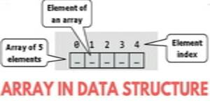
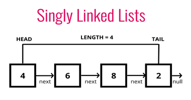
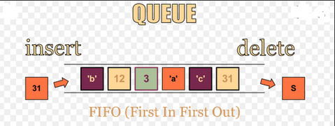
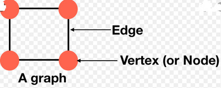

This is where data structures and algorithms come in. These interviews will test you on topics such as linked lists, queues, sorting, searching, and much more, so it’s crucial to prepare. Not only do companies want to test your technical knowledge, but they also want to evaluate your problem-solving skills. Furthermore, you will often use specific data structures and algorithms to optimize your code so that it runs as efficiently as possible. Important data structures to learn
Arrays
An array is a collection of items of the same variable type that are stored sequentially in memory. It’s one of the most popular and simple data structures and often used to implement other data structures. Each item in an array is indexed starting with 0, and each item is known as an element. It’s also important to note that in Java, you cannot change the size of an array. For dynamic sizes, it’s recommended to use a List.
Linked lists
A linked list is a linear sequence of nodes that are linked together. Each node contains a value and a pointer to the next node in the list. Unlike arrays, linked lists do not have indexes, so you must start at the first node and traverse through each node until you get to the nnnth node. At the end, the last node will point to a null value. The first node is called the head, and the last node is called the tail
Stacks
Stacks are linear data structures in a LIFO (last-in, first-out) order. Now, what does that mean? Imagine a stack of plates. The last plate that you put on top of the stack is the first one you take out. Stacks work that way: the last value you add is the first one you remove. Think of a stack like a collection of items that we can add to and remove from. The most common functions in a stack are push, pop, isEmpty, and peek.
Queues
Queues are very similar to stacks in that they both are linear data structures with dynamic size. However, queues are FIFO (first-in, first-out) data structures. To visualize this data structure, imagine you are lining up for a roller coaster. The first people that line up get to leave the line for the ride. In this data structure, elements enter from the “back” and leave from the “front.” The standard functions in a queue are enqueue, dequeue, rear, front, and isFull.
Graphs
A graph is a collection of vertices (nodes) that are connected by edges, creating a network. svg viewer Graphs are very versatile data structures that can solve a plethora of real-world problems. Graphs are often used in social networks like LinkedIn or Facebook. With GraphQL on the rise, data is being organized as graphs, or networks. Hash tables
Hashing
What’s hashing? Before we dive into hash tables, it’s essential to understand what hashing is. Hashing is the process of assigning an object into a unique index, known as a key. Each object is identified using a key-value pair, and the collection of objects is known as a dictionary. A hash table is implemented by storing elements in an array and identifying them through a key. A hash function takes in a key and returns an index for which the value is stored. So, whenever you input the key into the hash function, it will always return the same index, which will identify the associated element. Furthermore, if the hash function ever receives a unique key that returns an already used index, you can create a chain of elements with a linked list.